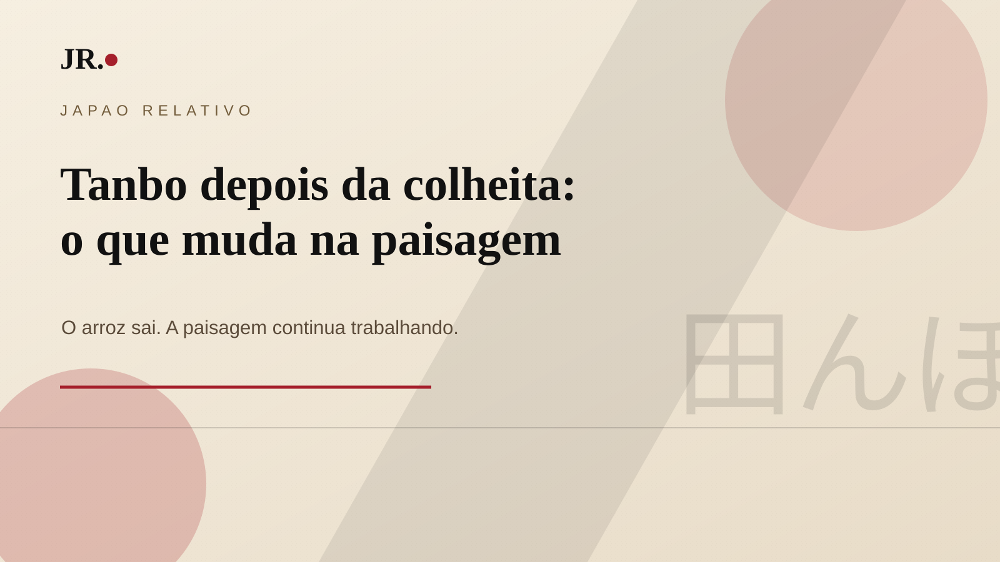

Depois da colheita, o tanbo muda de cor, textura e ritmo. As plantas altas desaparecem; ficam o corte baixo, a palha, as marcas das máquinas e a terra mais visível.

O campo parece vazio, mas não está parado
A fase depois da colheita revela uma parte menos turística do ciclo agrícola. O campo deixa de mostrar apenas abundância e passa a mostrar manejo, espera e preparação.
O que acontece com a palha
A palha de arroz pode ser recolhida para uso como alimento animal, incorporada ao solo ou receber outro manejo conforme a região, a propriedade e a orientação técnica local.
Por que observar o tanbo
Arrozais não são apenas cenário rural. Eles marcam calendário, trabalho, água, vizinhança e paisagem. No começo do outono, o tanbo pós-colheita mostra a estação de um jeito discreto, quase silencioso.